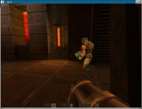

| project | home | description |
|---|---|---|
| jake2 |  java webstart updated on 12.05.2007 |
This is a Java port of the good old Quake II game engine.
The original game was developed at id software. You will find some infos at bytonic.de. You can play it now via java webstart. |